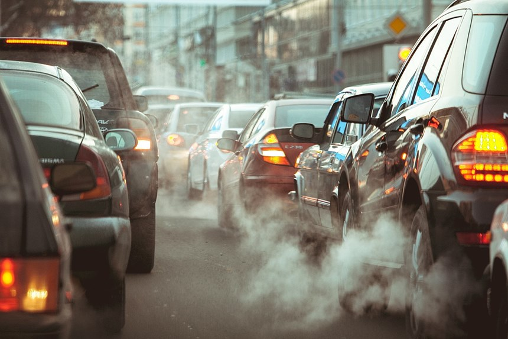
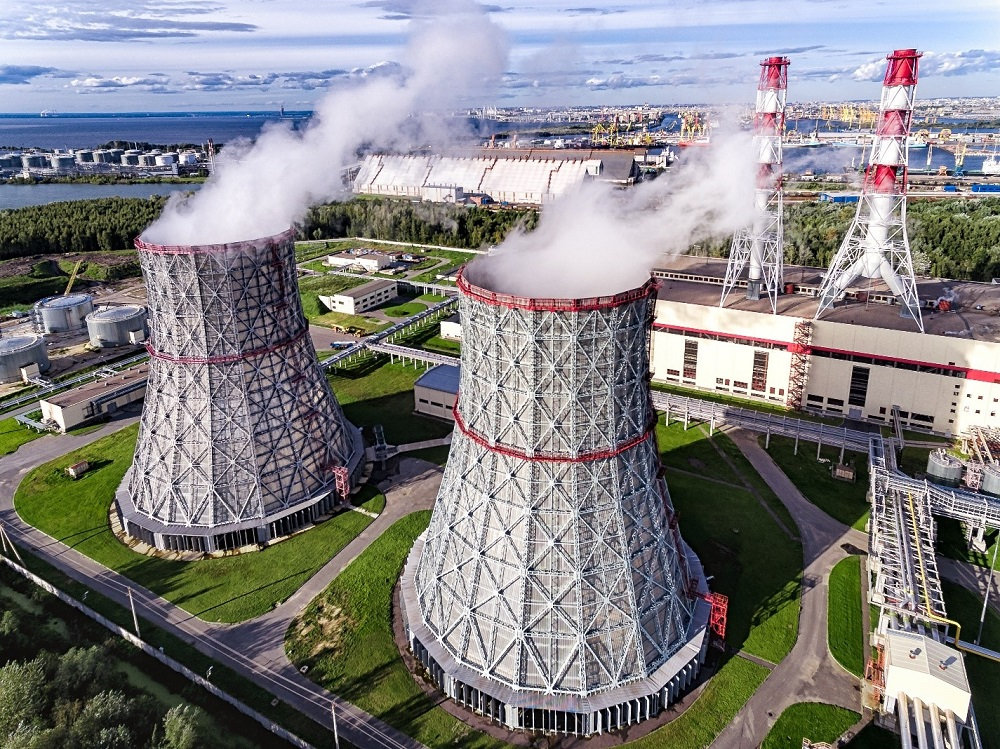
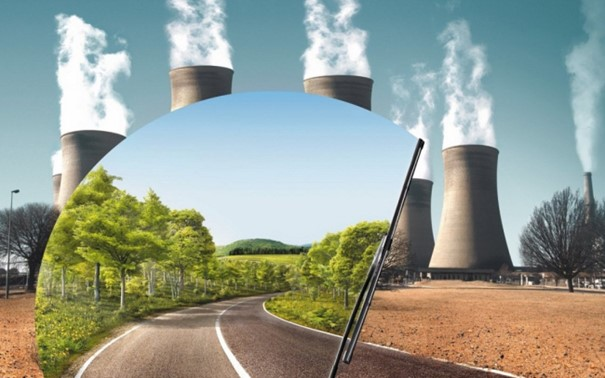
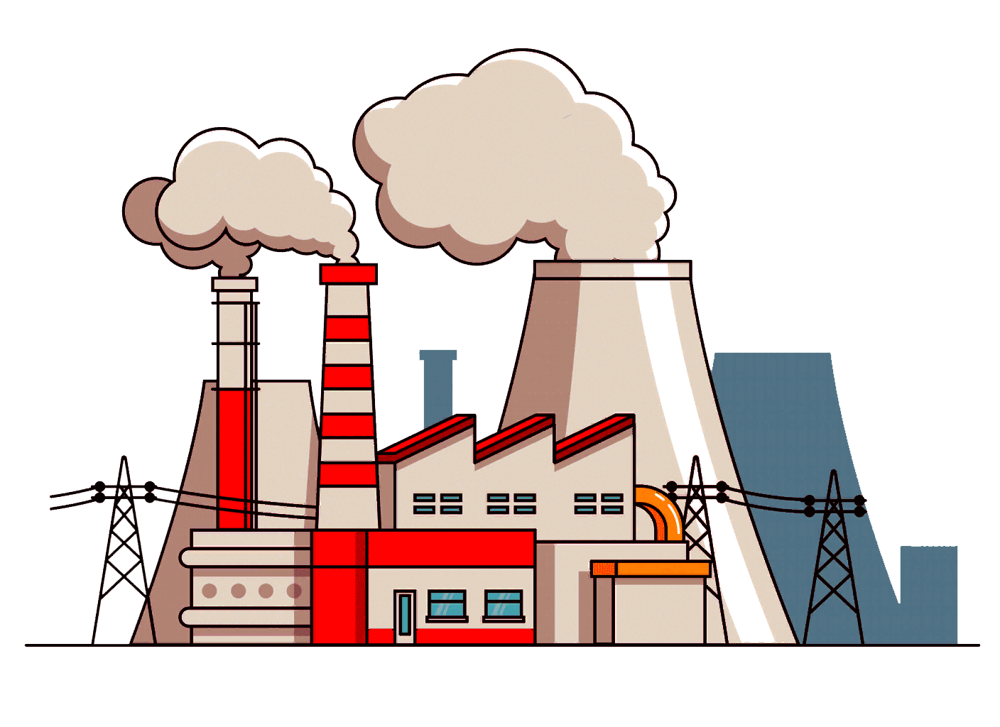
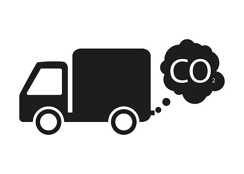
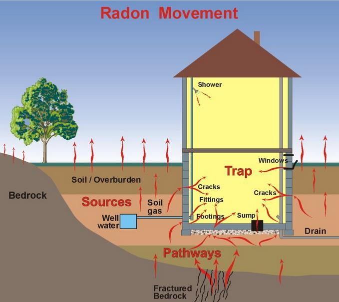

Einleitung
Erhöhter Luftdruck
Solche Veränderungen der Wetterbedingungen, die ein Mensch recht leicht und nur in hohem Maße tolerieren kann, können die Arbeit des Herzens und der Atemwege stören. Die Reaktion des Körpers auf hohen Blutdruck in der Atmosphäre besteht darin, die Atmung leicht zu verlangsamen und die Herzfrequenz nicht zu senken. Wenn der Druck sehr hoch ist, kann die Haut trocken werden, die Person spürt ein leichtes Taubheitsgefühl in den Gliedmaßen und der Mund ist trocken. Aber solche Zustände von sehr großem Unbehagen führen in der Regel nicht dazu. Wenn der Druck hoch ist, fängt es an zu regnen, und dieses Wetter ist unangenehm für Asthmatiker, Menschen mit Bluthochdruck und Menschen mit Gallensteinen. Reduzierung des atmosphärischen Drucks. Während viele Menschen einen Druckaufbau leicht tolerieren können, verursacht ein niedrigerer Luftdruck viele Probleme. Der Herzschlag wird unregelmäßig und schnell, was bei vielen Menschen große Beschwerden verursacht. Eine Abnahme des atmosphärischen Drucks führt zu einem leichten Sauerstoffmangel im Körper, was dem Einzelnen Unbehagen und Unbehagen bereitet. Sobald der Luftdruck abnimmt, sinkt der Partialdruck des Sauerstoffs, und schließlich erhält die Person weniger Sauerstoff, und die normale Atmung ist nicht mehr in der Lage, ihn wieder aufzufüllen. Daher können Menschen mit Herz-Kreislauf- und Atemwegserkrankungen atemlos sein und Schwierigkeiten beim Atmen haben.
Luftverschmutzung
Dies ist ein allgemeines Merkmal. Die Luftverschmutzung hat direkte Auswirkungen auf die menschliche Gesundheit, während die Luftverschmutzung (auf globaler Ebene) nur indirekt direkte Auswirkungen auf die menschliche Gesundheit hat, und zwar als Folge des Klimawandels, des Abbaus des Ozonschilds der Biosphäre, des sauren Regens usw. Die häufigsten Gruppen von Luftschadstoffen sind atmosphärische Gase (Stickoxide, Schwefel, Kohlenstoff, z.B. Kohlendioxid), Kohlenwasserstoffe, Phenole, Aerosole von Schwermetallen und andere organische und mineralische Verbindungen. Aerosole sind Partikel aus festen oder flüssigen Substanzen, sowohl organisch als auch anorganisch, die in einem gasförmigen Medium suspendiert sind. Aerosole können Komplexe von Chemikalien enthalten, einschließlich solcher, die hochgiftig und gefährlich für die menschliche Gesundheit und die Lebensfähigkeit der Pflanzen sind.
Eine sehr große Gruppe von Schadstoffen sind Kohlenwasserstoffe, die Chlor-, Fluor-, Stickstoff- und Phosphorverbindungen enthalten, die für Mensch und Tier am gefährlichsten sind, von denen die meisten giftige Substanzen sind und Krebs verursachen können. Zu dieser Gruppe gehören auch polyzyklische aromatische Kohlenwasserstoffe (PAK), von denen die gefährlichsten Benzopyrene und Phenanthrene sind, die ebenfalls Krebs verursachen.
Quellen der Luftverschmutzung
Quellen der Luftverschmutzung. Die Hauptquellen der Luftverschmutzung sind Fahrzeuge, die die oben genannten Blei-, Kohlenmonoxid- und PAK-Stoffe liefern. In den meisten Ländern der Welt wird geschätzt, dass mehr als die Hälfte der Luftverschmutzung von Kraftfahrzeugen ausgeht. Im Durchschnitt machen Fahrzeugabgase 40-45% der Luftverschmutzung in Russland aus, aber in Städten sind es mehr als 50%, in Großstädten (von 0,5 Millionen bis 1-1,5 Millionen Einwohner) - 55-70% und in sehr großen Städten (mehrere Millionen Einwohner) - mehr als 85% der gesamten Luftverschmutzung. In Russland sind Moskau und St. Petersburg mit Emissionen von 800 bzw. 250 Tausend Tonnen pro Jahr führend in Bezug auf die Transportemissionen. Emissionen aus Wärmekraftwerken, die Schwefel- und Stickoxide, Asche, Schwermetalle und PAK im Zusammenhang mit der Verbrennung von Brennstoffen enthalten, machen ebenfalls einen erheblichen Teil der Luftverschmutzung aus. Darüber hinaus sind Kohlekraftwerke die wichtigsten, während Erdgaskraftwerke die emissionsärmsten Quellen sind.


Chemische Industriebetriebe emittieren Kohlenwasserstoffe, Phenole, organische Fluoride und Chloride, Carbonsäuren, Aldehyde, organische Schwefelverbindungen, Chlor, Fluor, Stickstoff, Schwefeldioxid, Schwefelwasserstoff, Stickoxide, Salzsäure, andere Säuren, Fluorverbindungen, Schwermetalle, Karbide und andere in die Atmosphäre. Metallurgische Anlagen emittieren große Mengen an Staub, Schwefeloxiden, Kohlen- und Stickoxiden, Fluoridgasen und Metallen in die Atmosphäre. Die Zusammensetzung dieses Staubes lässt sich daran messen, dass aus einer Tonne Staub, der beim Schmelzen von Kupfer freigesetzt wird, etwa 100 kg Kupfer und etwas weniger Zink und Blei gewonnen werden können, die für ihre Toxizität bekannt sind. Emissionen aus der Ölförderung und Raffinerien enthalten Kohlenwasserstoffe, Schwefelwasserstoff, Schmelzgase (Styrol, Aceton, Toluol usw.) und beim Abfackeln von Erdölbegleitgasen große Mengen an Ruß, Kohlenmonoxid, Stickstoffdioxid und Kohlenwasserstoffen.
Auswirkungen auf die natürliche Umwelt
 Die oben erwähnten Chemikalien in der Luft haben nicht nur Auswirkungen auf die menschliche Gesundheit, die im nächsten Abschnitt behandelt wird, sondern auch auf die natürliche Umwelt. In natürlichen Ökosystemen sind diese Auswirkungen vielfältig und wurden bisher nicht ausreichend berücksichtigt. Einige atmosphärische Gase (z.B. Kohlendioxid) können sich in geringen Konzentrationen positiv auf das Wachstum und die Entwicklung von Pflanzen auswirken. Aber die meisten Schadstoffe, insbesondere in signifikanten Konzentrationen, können die Biota-Aktivität hemmen. Schwefeldioxid hat eine schädliche Wirkung auf Pflanzen. Wenn es während der Atmung in das Blatt eindringt, verengt es die Zellen, die Blätter sind zuerst mit braunen Flecken bedeckt und trocknen dann aus. Stickstoffdioxid hat eine ähnliche Wirkung auf Laubbäume. Ruß, der als nicht sehr gesundheitsschädlich gilt Die Verschmutzung der Luft, die die Atemwege der Nadeln verstopft, führt zum Absterben von Nadelbäumen. Umweltschützer führen die Rußemissionen aus dem Abfackeln von Gas, die über weite Gebiete Sibiriens verstreut sind, auf das Austrocknen der Wälder in einigen ölproduzierenden Gebieten zurück.
Arten von chemischen Verunreinigungen
Zu den wichtigsten Arten chemischer Luftverunreinigung gehören:
a) Luftverschmutzung, deren Hauptursachen Wärmekraftwerke sind, die Kohle mit hohem Aschegehalt verbrauchen, Waschanlagen, Hütten, Zementwerke, Magnesit- und Kompostanlagen, Industriedeponien und Massenstrahlen. Aerosolpartikel aus diesen Quellen zeichnen sich durch eine Vielzahl chemischer Zusammensetzungen aus (Silizium, Kalzium- und Kohlenstoffverbindungen, Nickeloxide, Blei, Antimon, Wismut, Selen, Arsen, Beryllium, Cadmium, Chrom, Kobalt, Molybdän und Asbest).
b) Photochemischer Nebel (Smog), der durch photochemische Reaktionen in Gegenwart hoher Konzentrationen von Stickoxiden, Kohlenwasserstoffen und anderen Schadstoffen in der Atmosphäre, intensiver Sonneneinstrahlung und windlosem oder sehr schwachem Luftaustausch in einer Oberflächenschicht mit starker und erhöhter Inversion für mindestens 24 Stunden entsteht.Die Hauptbestandteile von Smog sind Ozon, Stickoxide und Schwefeloxide
c) Luftverschmutzung durch Fahrzeugemissionen. Derzeit stammen mehr als die Hälfte aller schädlichen Emissionen in die Umwelt, die vor allem in Großstädten die Hauptquelle der Luftverschmutzung sind, aus dem Straßenverkehr. Die Menge der Schadstoffe, die als Teil der Abgase in die Atmosphäre emittiert werden, hängt vom allgemeinen technischen Zustand der Fahrzeuge und insbesondere vom Motor ab, der die größte Verschmutzung verursacht.Der Gesamtausstoß giftiger Substanzen in die Atmosphäre durch Flugzeuge mit Gasturbinentriebwerken (GTE) nimmt stetig zu. Sie enthalten giftige Bestandteile wie Kohlenmonoxid, Stickoxide, Kohlenwasserstoffe, Ruß, Aldehyde und andere. Die Auswirkungen der Gasturbinenabgabe auf die Ozonschicht und die Anreicherung von Kohlendioxid in der Atmosphäre sind erwiesen.
d) Luftverschmutzung in Innenräumen. Die Hauptquellen dieser Kontamination sind Radon, ein Produkt des radioaktiven Zerfalls von Uran, das durch Leckagen aus dem Boden in die Häuser gelangt; Produkte unvollständiger Verbrennung, die durch unvollständige Verbrennung von Brennstoffen in Öfen, Kaminen und anderen Heizgeräten sowie durch das Rauchen krebserregender Chemikalien wie Kohlenwasserstoffe verursacht werden; Freisetzung von Chemikalien bei der Verwendung von Bleichmitteln, Farben, Schuhpflegecremes, verschiedenen Reinigungsmitteln, Deodorants, Asbest und anderen Stoffe.
All dies führt zu Situationen, die zu Veränderungen in der Atmosphäre führen:
Chemische Verunreinigungen
 Kohlenmonoxid. Es wird durch unvollständige Verbrennung von kohlenstoffhaltigen Substanzen gewonnen. Es wird bei der Verbrennung von abgas- und industrieabgashaltigen festen Abfällen in die Luft abgegeben. Mindestens 1250 Millionen Tonnen dieses Gases werden jährlich in die Atmosphäre emittiert. Kohlenmonoxid ist eine Verbindung, die aktiv mit den Bestandteilen der Atmosphäre reagiert und zu einem Anstieg der Temperatur auf dem Planeten und zur Entstehung des Treibhauseffekts beiträgt.
Schwefelsäureanhydrid. Es wird bei der Verbrennung von schwefelhaltigem Brennstoff oder bei der Verarbeitung von schwefelhaltigen Erzen (bis zu 170 Millionen Tonnen pro Jahr) freigesetzt. Einige Schwefelverbindungen werden freigesetzt, wenn organische Rückstände in Erzreserven verbrannt werden. Allein in den Vereinigten Staaten von Amerika beträgt die Gesamtmenge an Schwefeldioxid, die in die Atmosphäre emittiert wird, 65 Prozent der globalen Emissionen.
Schwefelsäureanhydrid. Es entsteht bei der Oxidation von Schwefeldioxid. Das Endprodukt der Reaktion ist ein Aerosol oder eine Lösung von Schwefelsäure im Regenwasser, die den Boden ansäuert und Atemwegserkrankungen verschlimmert. Schwefelsäure-Aerosolablagerungen aus chemischen Fackeln wurden bei niedriger Wolkendecke und hoher Luftfeuchtigkeit beobachtet. Die Blattspreiten von Pflanzen, die in einer Entfernung von weniger als 11 km von solchen Pflanzen wachsen, sind normalerweise dicht mit kleinen nekrotischen Flecken bedeckt, die sich an Stellen bilden, an denen Schwefelsäure Tröpfchen abgelagert werden. Pyrometallurgische Anlagen der Nichteisen- und Eisenmetallurgie sowie thermische Kraftwerke emittieren jährlich Dutzende Millionen Tonnen Schwefeldioxid in die Atmosphäre.
Schwefelwasserstoff und Schwefelkohlenstoff. Sie werden einzeln oder zusammen mit anderen Schwefelverbindungen in die Atmosphäre emittiert. Die Hauptemissionsquellen sind Unternehmen, die synthetische Fasern, Zucker, Koksprodukte herstellen, Raffinerien und Ölfelder. In der Atmosphäre oxidieren sie bei Wechselwirkung mit anderen Schadstoffen langsam zu Schwefeldioxid.
Kohlenmonoxid. Es wird durch unvollständige Verbrennung von kohlenstoffhaltigen Substanzen gewonnen. Es wird bei der Verbrennung von abgas- und industrieabgashaltigen festen Abfällen in die Luft abgegeben. Mindestens 1250 Millionen Tonnen dieses Gases werden jährlich in die Atmosphäre emittiert. Kohlenmonoxid ist eine Verbindung, die aktiv mit den Bestandteilen der Atmosphäre reagiert und zu einem Anstieg der Temperatur auf dem Planeten und zur Entstehung des Treibhauseffekts beiträgt.
Schwefelsäureanhydrid. Es wird bei der Verbrennung von schwefelhaltigem Brennstoff oder bei der Verarbeitung von schwefelhaltigen Erzen (bis zu 170 Millionen Tonnen pro Jahr) freigesetzt. Einige Schwefelverbindungen werden freigesetzt, wenn organische Rückstände in Erzreserven verbrannt werden. Allein in den Vereinigten Staaten von Amerika beträgt die Gesamtmenge an Schwefeldioxid, die in die Atmosphäre emittiert wird, 65 Prozent der globalen Emissionen.
Schwefelsäureanhydrid. Es entsteht bei der Oxidation von Schwefeldioxid. Das Endprodukt der Reaktion ist ein Aerosol oder eine Lösung von Schwefelsäure im Regenwasser, die den Boden ansäuert und Atemwegserkrankungen verschlimmert. Schwefelsäure-Aerosolablagerungen aus chemischen Fackeln wurden bei niedriger Wolkendecke und hoher Luftfeuchtigkeit beobachtet. Die Blattspreiten von Pflanzen, die in einer Entfernung von weniger als 11 km von solchen Pflanzen wachsen, sind normalerweise dicht mit kleinen nekrotischen Flecken bedeckt, die sich an Stellen bilden, an denen Schwefelsäure Tröpfchen abgelagert werden. Pyrometallurgische Anlagen der Nichteisen- und Eisenmetallurgie sowie thermische Kraftwerke emittieren jährlich Dutzende Millionen Tonnen Schwefeldioxid in die Atmosphäre.
Schwefelwasserstoff und Schwefelkohlenstoff. Sie werden einzeln oder zusammen mit anderen Schwefelverbindungen in die Atmosphäre emittiert. Die Hauptemissionsquellen sind Unternehmen, die synthetische Fasern, Zucker, Koksprodukte herstellen, Raffinerien und Ölfelder. In der Atmosphäre oxidieren sie bei Wechselwirkung mit anderen Schadstoffen langsam zu Schwefeldioxid.
 Stickoxide. Die Hauptemissionsquellen sind Anlagen, die Stickstoffdünger, Salpetersäure und Nitrate, Anilinfarbstoffe, Nitroverbindungen, Viskoseseide und Zelluloid produzieren. Die Menge an Stickoxiden, die in die Atmosphäre emittiert werden, beträgt 20 Millionen Tonnen pro Jahr.
Fluorverbindungen. Zu den Verschmutzungsquellen gehören Aluminium, Emaille, Glas, Keramik, Stahl und Phosphatdünger. Fluorhaltige Substanzen gelangen in Form von gasförmigen Verbindungen in die Atmosphäre - Fluorwasserstoff oder Staub aus Natriumfluorid und Kalzium. Die Verbindungen haben eine toxische Wirkung. Fluoridderivate sind starke Insektizide.
Chlorverbindungen. Sie gelangen von chemischen Unternehmen in die Atmosphäre, die Salzsäure, chlorierte Pestizide, organische Farbstoffe, hydrolysierten Alkohol, Chlorkalk und Soda herstellen. Sie treten in der Atmosphäre in Form einer Beimischung von Chlormolekülen und Salzsäuredämpfen auf. Die Toxizität von Chlor wird durch die Art der Verbindungen und deren Konzentration bestimmt. In der metallurgischen Industrie werden verschiedene Schwermetalle und giftige Gase in die Atmosphäre abgegeben, wenn Gusseisen geschmolzen und zu Stahl verarbeitet wird. Also, basierend auf 11 Tonnen. Neben 12,7 kg 0-Schwefeldioxid und 14,5 kg 0-Staubpartikeln wird 0-reduziertes Eisen freigesetzt, die die Menge an Arsen, Phosphor, Antimon, Blei, Quecksilberdampf und seltenen Metallen, Harzen und Blausäure bestimmen
Stickoxide. Die Hauptemissionsquellen sind Anlagen, die Stickstoffdünger, Salpetersäure und Nitrate, Anilinfarbstoffe, Nitroverbindungen, Viskoseseide und Zelluloid produzieren. Die Menge an Stickoxiden, die in die Atmosphäre emittiert werden, beträgt 20 Millionen Tonnen pro Jahr.
Fluorverbindungen. Zu den Verschmutzungsquellen gehören Aluminium, Emaille, Glas, Keramik, Stahl und Phosphatdünger. Fluorhaltige Substanzen gelangen in Form von gasförmigen Verbindungen in die Atmosphäre - Fluorwasserstoff oder Staub aus Natriumfluorid und Kalzium. Die Verbindungen haben eine toxische Wirkung. Fluoridderivate sind starke Insektizide.
Chlorverbindungen. Sie gelangen von chemischen Unternehmen in die Atmosphäre, die Salzsäure, chlorierte Pestizide, organische Farbstoffe, hydrolysierten Alkohol, Chlorkalk und Soda herstellen. Sie treten in der Atmosphäre in Form einer Beimischung von Chlormolekülen und Salzsäuredämpfen auf. Die Toxizität von Chlor wird durch die Art der Verbindungen und deren Konzentration bestimmt. In der metallurgischen Industrie werden verschiedene Schwermetalle und giftige Gase in die Atmosphäre abgegeben, wenn Gusseisen geschmolzen und zu Stahl verarbeitet wird. Also, basierend auf 11 Tonnen. Neben 12,7 kg 0-Schwefeldioxid und 14,5 kg 0-Staubpartikeln wird 0-reduziertes Eisen freigesetzt, die die Menge an Arsen, Phosphor, Antimon, Blei, Quecksilberdampf und seltenen Metallen, Harzen und Blausäure bestimmen
In dieser Arbeit untersuchten die Autoren die wichtigsten Umweltprobleme der modernen Welt im Zusammenhang mit menschlichen Wirtschaftsaktivitäten. Und die Lösung dieser Probleme ist auf globaler zwischenstaatlicher Ebene möglich. Und wir zählen darauf, dass Sie verstehen, was Sie tun und wozu es führen könnte.